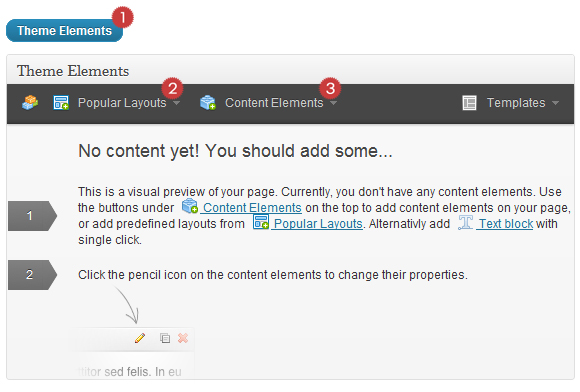
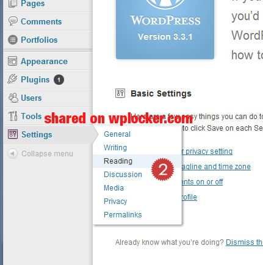
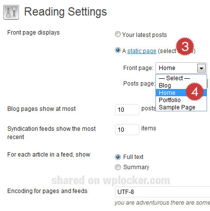

Hello! First of all I would like to thank you for purchasing my theme!
This documentation will teach you how to set up and use the "MultiGrid" WordPress Theme. If you have any questions that are beyond the scope of this help file, please feel free to email via my user page contact form following into ThemeTON site.
If you like this theme please don't forget to rate it on the ThemeForest site.
Best regards ThemeTon.
Surely you have already installed WordPress on your server. If you are new to wordpress and have problems installing it, you might want to check out this link:
Unzip the file you download after the purchase. The following files and folders will be in the unzipped file:
There are 2 main ways to upload the theme:
1. Via FTP client
"MultiGrid", unzip it and upload the folder to the main WordPress installation folder » wp-content » themes. Please note that if you prefer this way of installation, you have to make sure that the main files of the theme are contained just within one folder of the themes folder. The right way to locate your root theme files is for example themes/MultiGrid but not themes/MultiGrid/MultiGrid.
2. Via the built in WordPress theme uploader (recommended)
"MultiGrid". After this you have to go in the admin panel » Appearance » Themes, click on the Install Themes tab and in this section in the top there is a link "Upload". After you click the "Upload" link, a new page will be opened where you will be asked to find the MultiGrid.zip file on your local file system.
Dashboard»Appearance » Themes. In this section you should see the theme with a title MultiGrid. Just click on Activate button and your theme should get activated.
Usually updating a theme means replacing the old files with the new ones. You can see changelog.txt file from the new download archive and you can get updated files list as modified/added and deleted. Upload and overwrite those files on your theme directory.
If theme changed lots of files and you really hard to collect changed files, there is a better way to do it when it comes to WordPress themes.
WordPress treats two version of the same theme as different themes. That is, if you have MultiGrid v1.2 and v1.3 in your wp-content/themes folder they are treated as two different themes independent of each other.
That means you can have multiple version of the same theme installed on your blog. So whenever there is a new version of your theme available, instead of replacing or deleting the files of the older version follow this procedure.
The main advantage of following the above procedure is you can quickly switch back to the old version of the theme if you find any problems with the new version or if it clashes with any plugins you are using.
Note: This video made on my another theme called ExtraGrid. If there has some different things, don't pay attention on those. I think most of the parts are very similar :)
Note: This video made on my another theme called ExtraGrid. If there has some different things, don't pay attention on those. I think most of the parts are very similar :)
Note: This video made on my another theme called ExtraGrid. If there has some different things, don't pay attention on those. I think most of the parts are very similar :)
Theme Elements will save you tons of time working on the site content. Now you'll be able to create complex layouts within minutes!
Add columns/elements with one click, then use your mouse to drag elements around to re-arrange them. Control element width with simple mouse clicking.
Lets click on Theme Elements (1) button when you editing your post/page. Then you can see the visual content builder immediately.
It has two kind of elements called Popular layouts (2) and Content Elements (3).
Lets see it in action
 
I've used the following sources, sites or other files as listed.
Open source projects
Licensed projects
jQuery & JQ Plugins
Graphics
Graphics (doesn't included in download)
Instagram images, authors:
Photodune images and authors:
Graphicriver images and authors:
Thanks to all the great authors who shared their brilliant work and let us to use it.
I have a dedicated support forum. Please join on here http://themeton.com/support
Best regards ThemeTON